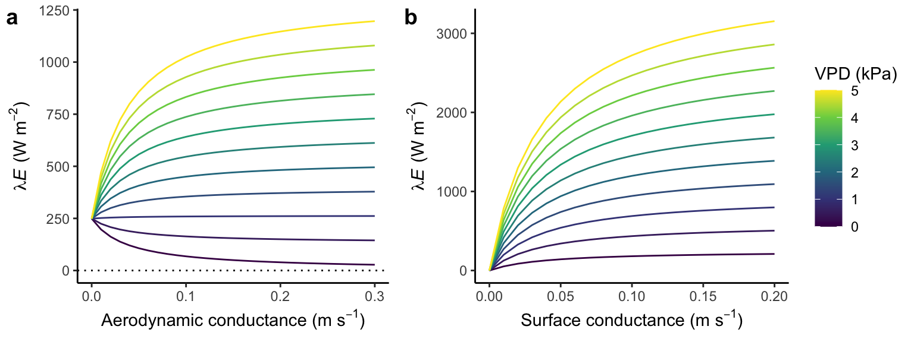
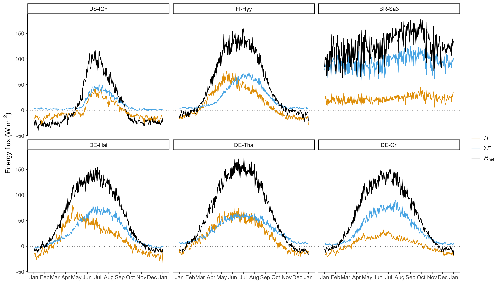

7 Land-climate interactions
In previous chapters, we have investigated the interactions between the atmosphere and the land surface through the exchange of CO2. In this, chapter, we focus on interactions through physical processes, including the radiative energy balance and heat fluxes at the land surface. Since these Earth system interactions are also mediated to a large degree through biology, they are referred to as biogeophysical processes. This is in contrast to the exchange of CO2 and nutrient fluxes, referred to as biogeochemical processes.
The partitioning of heat fluxes into a sensible (hot air) and latent (moist air) heat flux is strongly affected by the availability of water for evaporation and transpiration. All aspects that relate to the water cycle, how it is affected by vegetation, and how it affects the surface energy balance and limits vegetation activity, are introduced in Chapter 8. However, land-climate interactions are also important in absence of effects by water limitation. The surface properties, determined by the land cover type, its roughness, and (for vegetation) its conduciveness to evaporating water, have a strong influence on the atmosphere and climatic conditions, especially near the. surface - where life happens. Climate and numerical weather prediction models require the fluxes of energy, momentum, and water vapour for simulating atmospheric processes. This chapter introduces how properties of the vegetated land surface affect these fluxes.
7.1 Components of surface radiation
Analogous to solar radiation being the “engine” of biogeochemical processes through its control on photosynthesis, net radiation is the engine of energy and water vapour fluxes between the atmosphere and the land surface. Net radiation (\(R_n\)) is the net of incoming (or incident) shortwave radiation (\(S\downarrow\)) minus outgoing shortwave (solar) radiation (\(S\uparrow\)) and longwave radiation (\(L\downarrow\) and \(L\uparrow\)) at the land surface (Figure 7.1 a). \[ R_n = S\downarrow - S\uparrow + L\downarrow - L\uparrow \tag{7.1}\]
7.1.1 Incident shortwave radiation
Incident shortwave (solar) radiation \(S\downarrow\) was referred to in Chapter 6 as \(I_\mathrm{0}\). (Nomenclature will be homogenized across chapters in future issues this book.) It varies over the course of a day and a year, and is affected by the presence of clouds and the altitude of the land surface above sea level, as described in Chapter 6. As shown in Figure 7.2, the presence of clouds is a strong determinant of the incoming solar radiation energy flux, when considering global means (including the sea surface) under actual conditions and under cloud-free conditions (160 vs. 214 W-2).

7.1.2 Outgoing shortwave radiation and albedo
Outgoing shortwave radiation at the land surface (\(S\uparrow\)) is determined by the albedo (\(\alpha\)) - the fraction of the incident radiation that gets reflected. \[ S\uparrow = \alpha S\downarrow \tag{7.2}\] The albedo varies across different vegetation and other types of Earth surface covers. Values range from 0.8-0.95 for fresh snow, to 0.2-0.45 for a desert surface, 0.05–0.40 for bare soil, 0.05-0.26 for vegetation, and 0.03–0.10 for water (Oke 1987). Variations across different vegetation types are substantial as shown also in Figure 7.3. This indicates that the amount of outgoing shortwave radiation, and with it net radiation, is strongly affected by vegetation types.
Code
library(dplyr)
library(readr)
library(ggplot2)
df <- read_csv(here::here("data-raw/albedo_cescatti.csv"))
df |>
ggplot(aes(
x = reorder(vegtype, albedo_insitu, decreasing = TRUE),
y = albedo_insitu
)) +
geom_boxplot(fill = "grey70") +
geom_jitter(width = 0.15) +
theme_classic() +
labs(
x = "Vegetation type",
y = "Albedo"
)The diurnal variation of albedo is U-shaped - high at sunrise and sunset, and lower in between. Over the seasons, land surface albedo is affected by variations in LAI and by the presence of snow. During winter and in the presence of snow, the albedo of a grassland or a cropland can reach very high values - determined by the albedo of snow. In contrast, the albedo of a forest, even in the presence of snow, remains. much lower (0.2-0.4, Zhao and Jackson (2014)). This is because trees are not fully “submerged” in the snow pack, as opposed to grasses, and the exposed canopy absorbs a substantial fraction of the incident radiation. This effect of forest vs. non-forest covers on the surface energy balance during winter is referred to as the snow masking effect. Climate model simulations suggest that the low surface albedo during winter warms climate compared compared to a snow-covered grassland. Thus, deforestation/afforestation of boreal forest has the greatest biogeophysical effect of all biomes on temperatures (G. B. Bonan 2008).
Note that albedo also depends on the wavelength of the radiation, on the solar zenith angle (lower at noon), and on whether the solar radiation is diffuse or direct. Thus, albedo varies over time, \(\alpha\) in Equation 7.2 represents the albedo for shortwave radiation, and values shown in Figure 7.3 are averages across the seasons.
7.1.3 Longwave radiation
Every material body with a temperature above the absolute zero (0 K \(= -\) 273.15°C) emits radiative energy. The total radiative energy flux (integrated across wavelengths) and the wavelengths at which radiation is emitted depend on the temperature of the body and its emissivity. The surface of the sun is about 6000 K and emits radiation in the shorwave spectrum which is visible to the human eye. The Earth surface is on average 288 K and emits radiation in the longwave spectrum which is not visible to the eye.
Code
library(ggplot2)
library(cowplot)
# Formula for Planck's Law
calc_planck <- function(lambda, temp){
h <- 6.626e-34 # Planck’s constant
c <- 3e8 # speed of light
k <- 1.38e-23 # Stefan Boltzmann constant
out <- (2*pi*h*c^2) / (lambda^5*(exp(h*c/(k*lambda*temp)) - 1))
return(out)
}
gg1 <- ggplot() +
geom_function(
fun = calc_planck,
args = list(
temp = 6000
)
) +
xlim(0, 0.4e-5) +
theme_classic() +
labs(
title = "Sun",
subtitle = "6000 K",
x = "Wavelength (m)",
y = expression(paste("Emittance (W m"^-2, " m"^-1, ")"))
)
gg2 <- ggplot() +
geom_function(
fun = calc_planck,
args = list(
temp = 288
)
) +
xlim(0, 1e-4) +
theme_classic() +
labs(
title = "Earth",
subtitle = "288 K",
x = "Wavelength (m)",
y = expression(paste("Emittance (W m"^-2, " m"^-1, ")"))
)
plot_grid(
gg1,
gg2,
labels = c("a", "b")
)According to the Stefan-Boltzmann law, the total radiative energy flux scales with the temperature of the body \(T\) and an emissivity \(\varepsilon\): \[ R = \varepsilon \sigma T^4 \tag{7.3}\] \(\sigma\) is the Stefan Boltzmann constant and has a value of \(5.670\times 10^{-8}\) W m-2 K-4. Here, \(T\) is expressed in Kelvin. \(R\) is the integral under the curve in Figure 7.5. \(R\) stands for either longwave or shortwave radiation, as referred to as \(L\) and \(S\) in Equation 7.1.
The longwave radiation components are a substantial fraction of net radiation. In Figure 7.2, they are referred to as “thermal”. The outgoing longwave radiation \(L\uparrow\) is on average 398 W m-2 and is a function of the Earth’s surface temperature and emissivity, following the Stefan-Boltzmann law (Equation 7.3), plus the incident longwave radiation reflected (not absorbed) by the surface: \[ L\uparrow = \varepsilon \sigma T^4 + (1-\varepsilon) L\downarrow \tag{7.4}\] Note that \(\varepsilon\) is used in Equation 7.4 as the absorbtivity and in Equation 7.3 as the emissivity. This is because the two are equal.
Clouds absorb radiation emitted by the earth surface and re-emit a large fraction of it. In absence of clouds, much less radiation is absorbed and re-emitted by the atmosphere. Therefore, the incoming longwave radiation depends strongly on the presence of clouds.
Net radiation
Using Equation 7.2 and Equation 7.4, the net radiation at the earth surface (Equation 7.1) can be expressed as \[ R_n = (1-\alpha) S\downarrow + \varepsilon L\downarrow - \varepsilon \sigma T^4 \]
Exercise
- Calculate the albedo from ‘all sky’ conditions in Figure 7.2.
7.2 Surface energy balance
The energy available from radiative fluxes is converted into a sensible heat flux (\(H\)), a latent heat flux (\(\lambda E\)), and a ground heat flux (\(G\), Figure 7.1 b). Following energy conservation, net radiation is equal to the sum of these three heat fluxes. \[ R_n = H + \lambda E + G \tag{7.5}\]
The components of the surface energy balance (Equation 7.5) are commonly expressed in energy units (W m-2). Sensible heat is determined by the temperature of air. Latent heat is the energy contained by evaporated water. The latent heat flux (\(\lambda E\)) can also be expressed as a mass flux of water vapour (\(E\)). \(E\) is the mass flux of water vapor, e.g., expressed in units of g m-2 s-1. \(\lambda\) is the latent heat of vaporization and converts the mass units into energy units. It measures how much energy (Joules, J) is needed vapourize 1 g of water at constant temperature. \(\lambda\) is 2.466 MJ kg-1 at 15°C and has a slight dependence on temperature, decreasing linearly by about 3% from an air temperature of 0°C to 30°C (see code below using the {bigleaf} R package (Knauer et al. 2018)).
library(bigleaf) # This package contains lots of useful functions and parameters for land-atmosphere exchange. Reference: Knauer et al. 2018 https://dx.plos.org/10.1371/journal.pone.0201114
latent.heat.vaporization(30) / latent.heat.vaporization(0)[1] 0.9715714The sensible and latent heat fluxes are transported vertically, away from or to the land surface through convective transport. That is, through turbulences that mix the air and lead to a net vertical transport of heat and water vapor. Whether net fluxes are pointed upwards or downwards depends on the sign of the net radiation (see fig xxx) and typically changes between night and daytime. Note that the latent heat flux can be negative, leading to a net flux of water vapor towards the surface. The respective water mass condensates at the surface (of leaves) and can be a considerable fraction of the ecosystem water balance. The ground heat flux \(G\) buffers variations of net radiation, absorbing energy and removing heat from the surface during the day and summer and releasing heat during night and winter.
7.2.1 Energy partitioning
Physical and biological properties of the land surface determine not only the net radiation through (mainly) effects of the albedo, but also strongly influence the partitioning of net radiation into sensible and latent heat fluxes in Equation 7.5. Thus, the spatial distribution of vegetation and other land cover types, and the response of plants to temporal changes in the environment (and thus on LAI and stomatal conductance) influence the energy partitioning at the land surface and near-surface atmospheric conditions. In other words, we have to understand vegetation and its response to the environment in order to understand land-climate interactions and near-surface climate.
The key properties influencing the partitioning into the sensible and latent heat flux are the aerodynamic conductance to heat transfer (\(G_\mathrm{ah}\)) and the surface conductance to water vapor transport (\(G_\mathrm{sw}\)). How they influence the latent heat flux is shown in Figure 7.7. The aerodynamic conductance depends on the roughness of the surface and on wind speed. Taller vegetation has a higher roughness and a higher aerodynamic conductance. Roughness also increases with LAI.
On vegetated surfaces, the surface conductance to water vapor transport is strongly influenced by the stomatal conductance (\(g_s\), Equation 4.5 and Equation 4.11) and by the LAI. Water evaporation from rock, soil, leaf, or branch surfaces contributes to surface conductance and occurs also from non-vegetated surfaces. In a closed canopy, surface conductance is dominated by the signal by stomatal conductance. When leaves are active and photosynthesizing (high light), and when water stress is low (high soil moisture, low VPD), stomatal conductance is high. How water availability and vegetation regulate stomatal conductance and thus the latent heat flux and energy partitioning at the land surface is introduced in Chapter 8.
Dependency of energy partitioning on conductances
Given the atmospheric condition (net radiation \(R_n\) and the vapor pressure deficit of the ambient air \(D_a\)), the latent heat flux can be modelled following the Penman-Monteith equation: \[ \lambda E = \frac{s(R_n - G) + \rho c_p D_a G_\mathrm{ah}}{s + \gamma (1 + G_\mathrm{ah}/G_\mathrm{sw})} \tag{7.6}\]
- \(s\) is the slope of the saturation vapor pressure versus temperature curve (kPa K−1)
- \(\rho\) is the density of air (kg m-3)
- \(c_p\) is the heat capacity of dry air (J K−1 kg−1)
- \(\gamma\) is the psychrometric constant (kPa K−1)
A derivation of the Penman-Monteith equation is given by G. Bonan (2015), Ch. 12.7.
With this, and given the atmospheric condition, we can visualise the dependency of the latent heat flux on the aerodynamic and the surface conductances. Let’s assume \(R_n =\) 400 W m-1.
Code
library(bigleaf)
# calculate latent heat flux using penman monteith
calc_le_pm <- function(netrad, vpd, temp, g_ah, g_sw){
# ARGUMENTS
# netrad: net radiation
# vpd: vapour pressure deficit
# temp: ambient air temperature
# patm: atmospheric pressure (kPa)
# aerodynamic conductance to heat transport, in mass units (m s-1)
# surface conductance to water vapor transport, in mass units (m s-1)
# using standard atmospheric pressure
patm <- bigleaf.constants()$pressure0 * 1e-3
# slope of the saturation vapor pressure, using "Sonntag_1990" in Bigleaf
s <- Esat.slope(temp)$Delta
# density of air
rho <- air.density(temp, patm)
# heat capacity of dry air
cp <- bigleaf.constants()$cp
# psychrometric constant
gamma <- psychrometric.constant(temp, patm)
# assuming G = 0; conductances are in mass units
out <- (s * netrad + rho * cp * vpd * g_ah) / (s + gamma * (1 + g_ah / g_sw))
return(out)
}
# # test our function
# calc_le_pm(
# netrad = 100,
# vpd = 1,
# temp = 15,
# g_ah = 0.1, # mass units (m s-1)
# g_sw = mol.to.ms(0.6, Tair = temp, pressure = patm, constants = bigleaf.constants()) # convert molar units (mol m-2 s-1) to mass units
# )
#
# # test built-in function
# potential.ET(
# Gs_pot = 0.6, # molar units (mol m-2 s-1)
# Tair = 15,
# pressure = bigleaf.constants()$pressure0 * 1e-3,
# VPD = 1,
# Ga = 0.1, # mass units
# Rn = 100,
# approach = "Penman-Monteith"
# )[,"LE_pot"]
# plot vs aerodynamic conductance
df <- expand.grid(
g_ah = seq(0, 0.3, by = 0.01),
vpd = seq(0, 5, by = 0.5)
) |>
as_tibble() |>
mutate(
le = purrr::map2_dbl(
g_ah,
vpd,
~calc_le_pm(
netrad = 400,
vpd = .y,
temp = 15,
g_ah = .x,
g_sw = mol.to.ms(
0.6,
Tair = 15,
pressure = bigleaf.constants()$pressure0 * 1e-3,
constants = bigleaf.constants()
))
)
)
gg1 <- df |>
ggplot() +
geom_line(aes(g_ah, le, color = vpd, group = vpd)) +
scale_color_viridis_c(name = "VPD (kPa)") +
geom_hline(yintercept = 0, linetype = "dotted") +
theme_classic() +
labs(
x = expression(paste("Aerodynamic conductance (m s"^-1, ")")),
y = expression(paste(lambda, italic("E"), " (W m"^-2, ")"))
) +
theme(legend.position="none")
# plot vs surface conductance
df <- expand.grid(
g_sw = seq(0, 0.2, by = 0.01),
vpd = seq(0, 5, by = 0.5)
) |>
as_tibble() |>
mutate(
le = purrr::map2_dbl(
g_sw,
vpd,
~calc_le_pm(
netrad = 400,
vpd = .y,
temp = 15,
g_ah = 0.1,
g_sw = .x)
)
)
gg2 <- df |>
ggplot() +
geom_line(aes(g_sw, le, color = vpd, group = vpd)) +
scale_color_viridis_c(name = "VPD (kPa)") +
theme_classic() +
labs(
x = expression(paste("Surface conductance (m s"^-1, ")")),
y = expression(paste(lambda, italic("E"), " (W m"^-2, ")"))
)
plot_grid(
gg1,
gg2,
labels = c("a", "b"),
rel_widths = c(0.77, 1)
)

Figure 7.7 shows an interesting interactive effect of aerodynamic conductance and the VPD of ambient air. At low VPD, plant transpiration is reduced, thus limiting the latent heat flux (\(\lambda E\)). Under such conditions, the \(\lambda E\) declines with increasing aerodynamic conductance. This is because \(H\) rises faster than \(\lambda E\) with increasing aerodynamic conductance and consumes a larger share of the net radiation. Under moderate-to-high VPD (above $$1 kPa in this example), \(\lambda E\) rises with increasing aerodynamic conductance.
Under conditions of very low aerodynamic conductance (e.g., in a short-statured grassland that has a low surface roughness and under stable atmospheric conditions, e.g., during an inversion), the latent heat flux does not approach zero. This is because as long as there is positive net radiation (here 400 W m-2), the surface (skin temperature) heats up relative to the ambient air and creates a positive VPD at the leaf surface (even if VPD of ambient air is zero). These aspects drive a continued positive \(H\) and \(\lambda E\) and the rise of the surface boundary layer.
7.2.2 Evaporative fraction and Bowen ratio
When considering totals over longer periods of time (over at least one annual cycle), the ground heat flux can be neglected since the ground doesn’t gradually heat up over time. Hence, the sum of the latent and sensible heat fluxes add up to match net radiation. The evaporative fraction quantifies the fraction of available energy from net radiation goes into the latent heat flux. \[ \mathrm{EF} = \lambda E/R_n \] The remainder goes into the sensible heat flux. The Bowen ratio expresses the same relation and is defined as \[ B = H/\lambda E \] Quantifications of EF or \(B\) give important insights beyond the “first-order control” by net radiation. Variations across space reflect surface properties and vegetation activity. In forests, the proportion of evapotranspiration to available energy is typically lower compared to certain crops, and it’s even lower in conifer forests than in deciduous broadleaf forests (Figure 7.6).
7.3 Energy fluxes across biomes
As for C fluxes in Chapter 6, we turn to investigating diurnal and seasonal patterns in fluxes - this time the energy fluxes. The patterns observed at the same sites as used before illustrate general differences across biomes and how different characteristics of the vegetation cover affect the surface energy balance and flux partitioning. In addition to the temperate broadleaved forest site (Hainich Forest, DE-Hai), we consider a coniferous forest (DE-Tha) and a grassland site (DE-Gri) that are located closeby (and thus experience largely identical meterological conditions, ignoring feedbacks from vegetation-atmosphere fluxes that affect near-surface climate).
Code
df_sites <- read_csv(here::here("data/fdk_site_info.csv"))
# chose representative sites
use_sites <- c(
"FI-Hyy", # Boreal Forests/Taiga
"DE-Hai", # Temperate Broadleaf & Mixed Forests
"DE-Tha", # Temperate Coniferous
"DE-Gri", # Grassland just next to DE-Tha
"BR-Sa3", # Tropical
"US-ICh" # Tundra
)
# subset data
df_sites |>
filter(sitename %in% use_sites) |>
mutate(
lon = format(lon, digits = 3),
lat = format(lat, digits = 3),
elv = format(elv, digits = 3)
) |>
select(
Site = sitename,
Longitude = lon,
Latitude = lat,
Elevation = elv,
`Vegetation type` = igbp_land_use,
`Climate zone` = koeppen_code
) |>
knitr::kable()| Site | Longitude | Latitude | Elevation | Vegetation type | Climate zone |
|---|---|---|---|---|---|
| BR-Sa3 | -55.0 | -3.02 | 100 | EBF | Am |
| DE-Gri | 13.5 | 50.95 | 385 | GRA | Cfb |
| DE-Hai | 10.5 | 51.08 | 439 | DBF | Cfb |
| DE-Tha | 13.6 | 50.96 | 380 | ENF | Cfb |
| FI-Hyy | 24.3 | 61.85 | 181 | ENF | Dfc |
| US-ICh | -149.3 | 68.61 | 940 | OSH | ET |
7.3.1 Diurnal variations
Exercise
The diurnal course of energy fluxes is considered for an average day in July for each site. Describe key patterns and differences between sites and relate them to your knowledge about radiation, energy partitioning, and land surface and vegetation properties.
- How does net radiation compare across sites in the top row of Figure 7.9? What component of the net radiation (Figure 7.1 a) do you think is responsible for the observed differences? What surface property may contribute to the differences in net radiation and does it explain why the tropical site has a higher mid-day net radiation peak than the boreal site?
- How does net radiation compare across the three sites in the temperate biome? Can vegetation properties that affect the reflectance explain why the mid-day peak net radiation is lower for DE-Gri han for DE-Tha?
- During night-time, net radiation is negative at all sites. Which of the four components of net radiation is largest during nighttime?
- Is the land surface losing or gaining energy during the night? What flux drives this gain/loss (\(H\) or \(\lambda E\))?
- At what site is the nighttime energy gain/loss highest? What surface property may be responsible for this?
- Chararcterise the Bowen ratio at mid-day for all sites (greater than, close to, or smaller than 1).
- What site has the highest mid-day Bowen ratio? What site has the lowest mid-day Bowen ratio?
- Assuming all sites had the same aerodynamic and surface conductances, which site may have the highest mid-day VPD? Is this a valid assumption? If not, how do you expect conductances to differ among sites?
- The temperate coniferous forest site (which one?) has the higher mid-day net radiation than the temperate broadleaved fores site (which one?). Yet, its latent heat flux is lower than for the latter. Assuming they had the same VPD and aerodynamic conductance, what other surface property may explain this difference?
- The temperate grassland has a higher latent heat flux than the two temperate forest sites. Can the difference in vegetation height explain the difference in the latent heat flux?
- What site has the highest sensible heat flux? If you were a paraglider, over which site do you expect to find the strongest up-lift to take you to your next destination?
7.3.2 Seasonal variations

Exercise
- Which site has the highest net radiation around May? What surface property may this be related to?
- Which site has the lowest summertime net radiation? How does this compare to differences in summertime solar radiation among these sites? What other components of net radiation do you expect to explain the low summertime net radiation at this site?
- What could explain the different seasonal course of the latent and sensible heat flux at DE-Hai, while they vary in parallel at DE-Tha?
- What may be the cause of the delayed springtime increase of \(\lambda E\), compared to \(H\) at FI-Hyy?
- What site loses the largest amount of water on an annual basis?
- Do you find other interesting patterns and interpretable differences between sites?